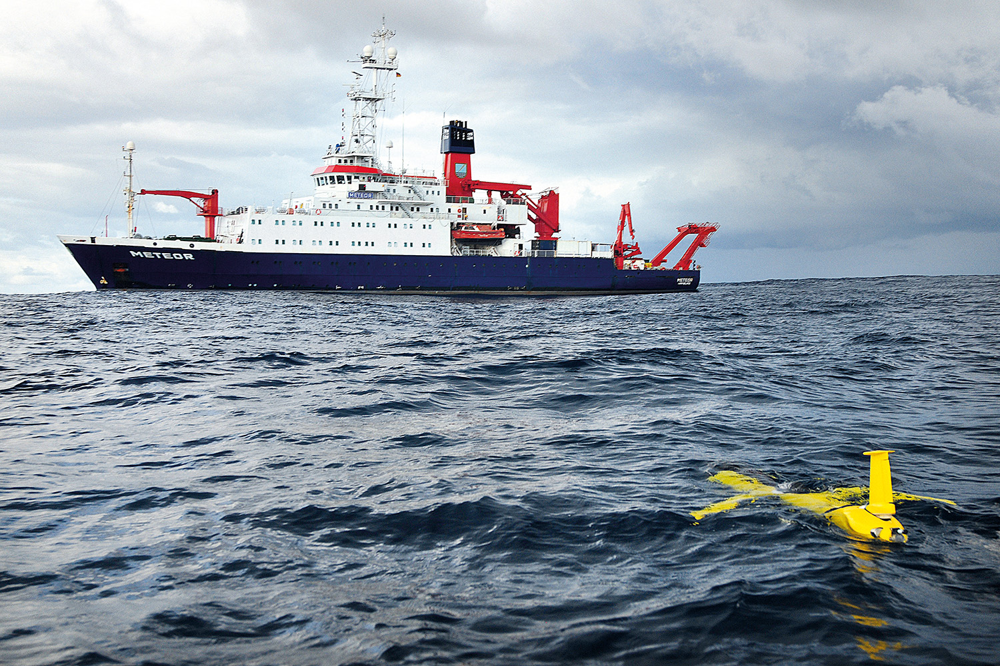

Large-Scale Atlantic Overview
Basin-scale conditions along the RV Meteor M219 WAVES cruise corridor from Recife to Cape Verde and Emden.
Regional Zoom Panels
Focused views for planned transects and the K1–K4 / CVOO region.
RV METEOR M219 WAVES
Near-real-time environmental monitoring and operational oceanography along the M219 WAVES cruise corridor across the tropical Atlantic, integrating Copernicus Marine, ERA5, satellite observations, and derived diagnostics.
Photo: Mario Mueller / GEOMAR

Basin-scale conditions along the RV Meteor M219 WAVES cruise corridor from Recife to Cape Verde and Emden.
Focused views for planned transects and the K1–K4 / CVOO region.